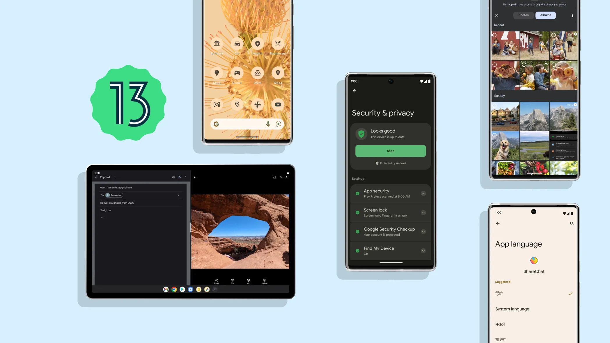
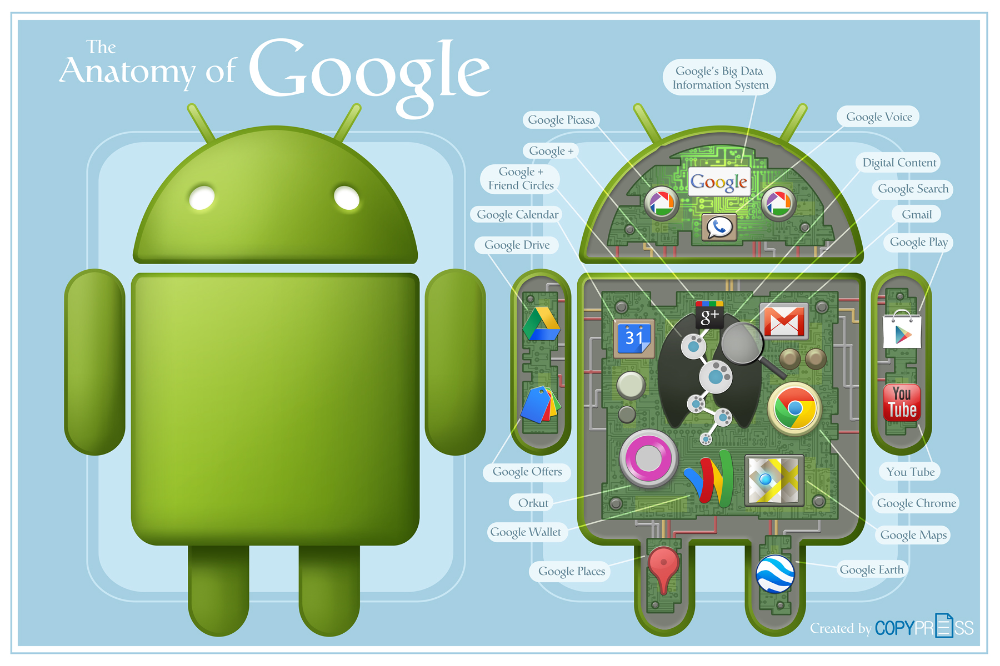
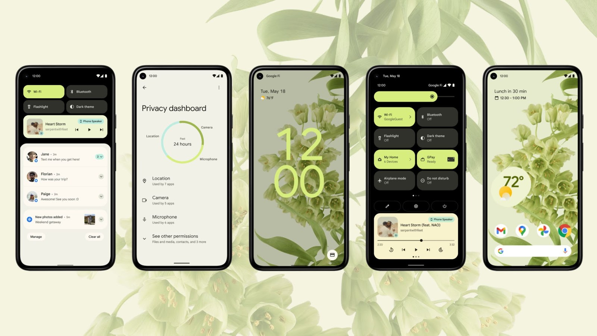
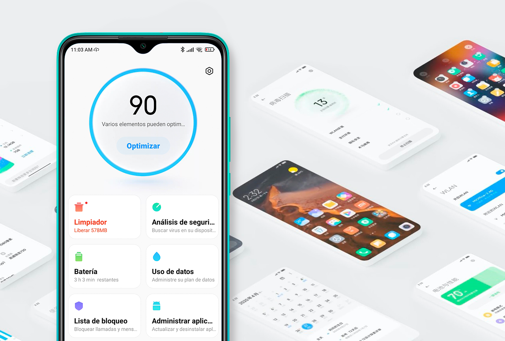

Android

1. Android - Kirish
Android — bu Google tomonidan ishlab chiqilgan va turli xil qurilmalarda, jumladan, smartfonlar, planshetlar, televizorlar va boshqa raqamli qurilmalarda ishlatiladigan mobil operatsion tizim. Android ochiq kodli bo'lib, dunyo bo'ylab juda ko'p ishlab chiquvchilar tomonidan qo'llab-quvvatlanadi.
Android tarixi
Android dastlab 2003 yilda Android Inc. tomonidan ishlab chiqilgan va keyinchalik 2005 yilda Google tomonidan sotib olingan. Android 2008 yilda birinchi rasmiy versiyasi bilan ommaga taqdim etildi va shu vaqtdan beri dunyo bo'ylab eng keng tarqalgan mobil operatsion tizimga aylandi.
Androidning asosiy xususiyatlari
- Ochiq kodli tizim
- Yuqori darajadagi moslashuvchanlik
- Keng dasturiy ta'minot ekotizimi
- Google xizmatlari bilan integratsiya
- Xavfsizlik va maxfiylik himoyasi
Androidning foydalanish sohalari
Android operatsion tizimi ko'p turdagi qurilmalarda ishlatiladi, jumladan:
- Smartfonlar
- Planshetlar
- Televizorlar (Android TV)
- Soatlar (Wear OS)
- Avtomobillar (Android Auto)
Android dunyodagi eng keng tarqalgan va ko'p imkoniyatlarga ega mobil operatsion tizimlardan biri hisoblanadi. U ochiq kodli bo'lishi va keng ko'lamli qo'llanilishi bilan ajralib turadi. Android haqida batafsil ma'lumot olish uchun ushbu kurs davomida turli xil bo'limlarni o'rganib chiqishingiz mumkin.
2. Android Arxitekturasi
Android arxitekturasi bir necha qatlamlardan iborat bo'lib, har bir qatlam o'ziga xos vazifalarni bajaradi. Quyida Android arxitekturasi haqida batafsil ma'lumot keltirilgan:
Linux Kernel
Android operatsion tizimi Linux kernel asosida qurilgan. Linux kernel tizim resurslarini boshqarish, xavfsizlikni ta'minlash va qurilmaning asosiy xizmatlarini amalga oshirish uchun javobgardir. Kernel Android ilovalari va apparat o'rtasidagi bog'lovchi sifatida xizmat qiladi.
Hardware Abstraction Layer (HAL)
HAL apparat va dasturiy ta'minot orasidagi interfeysni ta'minlaydi. HAL turli xil apparat komponentlarini boshqarish uchun foydalaniladigan kutubxonalarni o'z ichiga oladi. Bu kutubxonalar apparat drayverlarini dasturiy ta'minotdan ajratib turadi va ularni ishlatish uchun qulay interfeys taqdim etadi.
Android Runtime (ART)
ART Android ilovalarini ishlatish uchun mo'ljallangan runtime muhitidir. ART ilovalarni bytecode dan mahalliy mashina kodiga kompilyatsiya qilish orqali samaradorlikni oshiradi. ART ilovalarning ish faoliyatini yaxshilash va resurslarni samarali ishlatish uchun javobgardir.
Application Framework
Application Framework ilovalarning yaratilishi va ishlatilishini osonlashtiradigan API va xizmatlar to'plamidir. Bu qatlamda ilovalar foydalanuvchi interfeysi, ma'lumotlar bazasi, tarmoq va boshqa xizmatlardan foydalanishi mumkin. Application Framework Android ilovalari uchun asosiy platformani ta'minlaydi.
Applications
Android ilovalari foydalanuvchilarga turli xil funksiyalarni taqdim etadi. Ushbu qatlamda foydalanuvchi tomonidan o'rnatilgan ilovalar, shuningdek, tizimning standart ilovalari (masalan, telefon qo'ng'iroqlari, SMS, brauzer) joylashgan. Har bir ilova o'zining mustaqil sandbox muhitida ishlaydi va boshqa ilovalar bilan xavfsizlik choralari orqali o'zaro aloqa qiladi.
Android arxitekturasi bir necha qatlamlardan iborat bo'lib, har bir qatlam tizimning samarali va xavfsiz ishlashini ta'minlash uchun o'ziga xos vazifalarni bajaradi. Ushbu arxitektura Android operatsion tizimining kuchli va moslashuvchan platforma bo'lishini ta'minlaydi.
3. Android Foydalanuvchi Interfeysi
Android foydalanuvchi interfeysi (UI) foydalanuvchilarga qurilma bilan o'zaro aloqa qilish uchun qulay va intuitiv vositalarni taqdim etadi. Quyida Android foydalanuvchi interfeysining asosiy elementlari haqida ma'lumot keltirilgan:
Home Screen
Home Screen foydalanuvchi uchun asosiy interfeys bo'lib, unda ilovalar, vidjetlar va qidiruv paneli joylashgan. Foydalanuvchilar Home Screen ni o'z xohishlariga ko'ra sozlashlari mumkin, masalan, ilovalarni guruhlash, vidjetlar qo'shish yoki fon suratlarini o'zgartirish.
Notifications
Android tizimida xabarnomalar (notifications) ilovalar va tizim hodisalari haqida foydalanuvchilarga bildirish uchun ishlatiladi. Xabarnomalar status bar da paydo bo'ladi va foydalanuvchilar ularni pastga surish orqali ko'rishlari mumkin. Xabarnomalar interaktiv bo'lib, foydalanuvchilar ularni o'qish, tozalash yoki tegishli ilovaga o'tishlari mumkin.
Navigation Bar
Navigation Bar foydalanuvchilar uchun tizimni boshqarish va ilovalar orasida o'tish uchun qulay vositalarni taqdim etadi. Navigation Bar da odatda uchta asosiy tugma mavjud: Back, Home va Overview (Recent Apps). Bu tugmalar foydalanuvchilar uchun qulay va intuitiv interfeysni ta'minlaydi.
Material Design
Material Design Google tomonidan ishlab chiqilgan dizayn tizimi bo'lib, ilovalarning yagona va intuitiv interfeysga ega bo'lishini ta'minlaydi. Material Design elementlari, masalan, kartalar, tugmalar, animatsiyalar va rang sxemalari foydalanuvchilarga qulay va vizual jihatdan yoqimli tajriba taqdim etadi.
Widgets
Widgets — bu Home Screen ga joylashtiriladigan va tezkor ma'lumotlarni taqdim etadigan kichik ilova interfeyslari. Vidjetlar foydalanuvchilarga ilovalarni ochmasdan turib, yangiliklar, ob-havo ma'lumotlari, kalendar hodisalari va boshqa ma'lumotlarni ko'rish imkonini beradi.
Android foydalanuvchi interfeysi foydalanuvchilarga qulay va samarali tajriba taqdim etadi. Home Screen, Notifications, Navigation Bar, Material Design va Widgets Android foydalanuvchi interfeysining asosiy elementlari bo'lib, ular foydalanuvchilarning qurilma bilan o'zaro aloqasini osonlashtiradi.
4. Android Dasturlarini Boshqarish
Android tizimida dasturlarni boshqarish foydalanuvchilar uchun qulay va samarali funksiyalarni taqdim etadi. Quyida Android dasturlarini boshqarishning asosiy elementlari haqida ma'lumot keltirilgan:
Google Play Store
Google Play Store Android qurilmalari uchun rasmiy ilova do'koni hisoblanadi. Foydalanuvchilar Google Play Store orqali turli xil ilovalarni yuklab olishlari, o'rnatishlari va yangilashlari mumkin. Google Play Store xavfsizlik tekshiruvlari orqali ilovalarning ishonchliligini ta'minlaydi.
App Management
Android tizimida foydalanuvchilar o'rnatilgan ilovalarni boshqarish uchun turli xil vositalar mavjud. Foydalanuvchilar ilovalarni sozlamalar orqali o'chirish, to'xtatish yoki ma'lumotlarini tozalash imkoniyatiga ega. Bu foydalanuvchilarga ilovalarning ishlashini nazorat qilish imkonini beradi.
Background Processes
Android ilovalari orqa fonda ishlashi mumkin. Foydalanuvchilar orqa fonda ishlayotgan ilovalarni nazorat qilish va ularni to'xtatish imkoniyatiga ega. Bu funksiyalar foydalanuvchilarga qurilmaning batareyasini va resurslarini samarali ishlatish imkonini beradi.
App Permissions
Android ilovalar uchun ruxsatlar tizimi mavjud bo'lib, foydalanuvchilar ilovalarning qaysi funksiyalarga kirishiga ruxsat berish yoki berishni boshqarishlari mumkin. Ruxsatlar tizimi foydalanuvchilarning shaxsiy ma'lumotlarini himoya qilishga yordam beradi.
App Updates
Google Play Store orqali ilovalarning muntazam yangilanishlari ta'minlanadi. Yangilanishlar ilovalarning yangi funksiyalarini qo'shish, xatolarni tuzatish va xavfsizlikni yaxshilash uchun muhimdir. Foydalanuvchilar ilovalarni avtomatik yoki qo'lda yangilashlari mumkin.
Android dasturlarini boshqarish foydalanuvchilar uchun qulay va samarali funksiyalarni taqdim etadi. Google Play Store, App Management, Background Processes, App Permissions va App Updates Android tizimida dasturlarni boshqarishning asosiy elementlaridir. Bu funksiyalar foydalanuvchilarga ilovalar bilan qulay ishlash imkonini beradi.
5. Android Xavfsizligi
Android xavfsizligi foydalanuvchilarni shaxsiy ma'lumotlarini va qurilmalarini himoya qilish uchun turli xil xavfsizlik choralari bilan ta'minlangan. Quyida Android xavfsizlik tizimi haqida batafsil ma'lumot keltirilgan:
Data Encryption
Android barcha foydalanuvchi ma'lumotlarini shifrlaydi. Bu shifrlash usuli ma'lumotlarni ruxsatsiz kirishdan himoya qiladi. Foydalanuvchilar o'z qurilmalariga kirish uchun parol, PIN yoki biometrik autentifikatsiya (masalan, barmoq izi yoki yuz aniqlash) vositalaridan foydalanishlari mumkin.
Application Sandbox
Android har bir ilovani o'zining sandbox muhiti ichida ishga tushiradi. Bu boshqa ilovalarning bir-biriga ruxsatsiz kirishining oldini oladi va tizim xavfsizligini oshiradi. Har bir ilova faqat o'ziga tegishli ma'lumotlarga kirish imkoniga ega bo'ladi.
Google Play Protect
Google Play Protect ilovalarning xavfsizligini nazorat qilish uchun ishlatiladi. Google Play Protect doimiy ravishda ilovalarni zararli kodlardan skanerlash va ularni avtomatik ravishda olib tashlash orqali qurilmalarni xavfsiz holatda saqlaydi.
Security Updates
Google muntazam ravishda xavfsizlik yangilanishlarini chiqarib turadi. Bu yangilanishlar xavfsizlik teshiklarini yopish, yangi tahdidlarga qarshi himoya qilish va tizimning umumiy xavfsizligini oshirish uchun muhimdir. Foydalanuvchilar yangilanishlarni o'z vaqtida o'rnatishlari xavfsizlikni ta'minlash uchun zarurdir.
App Permissions
Android tizimida ilovalarga berilgan ruxsatlar foydalanuvchilar tomonidan nazorat qilinadi. Foydalanuvchilar har bir ilovaning qaysi ma'lumotlarga kirish huquqiga ega ekanligini sozlashlari mumkin. Bu foydalanuvchilarning shaxsiy ma'lumotlarini himoya qilishda muhim rol o'ynaydi.
Android xavfsizligi foydalanuvchilarni va ularning qurilmalarini himoya qilish uchun kuchli choralardan foydalanadi. Data Encryption, Application Sandbox, Google Play Protect, Security Updates va App Permissions Android xavfsizligini ta'minlashning asosiy elementlaridir. Bu